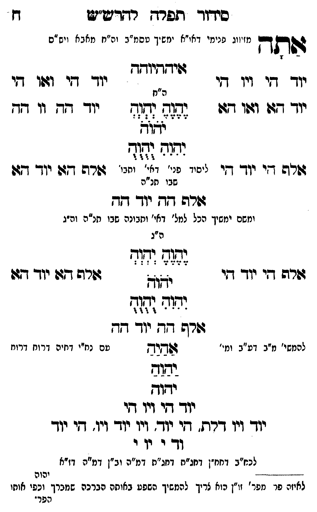

Neue Klartextfassung
אתה [מזיווג פנימי דאו"א ימשך עסמ"ב ונרנח"י דחכמה ויש"ס] איההיוהה === טבלה === [טור ימין] יוד הי ויו הי יוד הא ואו הא אלף הי יוד הי [טור אמצעי] [ה"ח] יֶהֶוֶהֶ יְהְוְהְ יֹהֹוֹהֹ יִהִוִהִ יֻהֻוֻהֻ [ליסוד פני' דאי' ותבו' שבו חו"ח] [טור שמאל] יוד הי ואו הי יוד הה וו הה אלף הא יוד הא === סוף טבלה === אלף הה יוד הה [ומשם ימשיך הכל למל' דאי' ותבונה שבו חו"ח וה"ג] === טבלה === [טור ימין] אלף הי יוד הי [טור אמצעי] [ה"ג] יֶהֶוֶהֶ יְהְוְהְ יֹהֹוֹהֹ יִהִוִהִ יֻהֻוֻהֻ [טור שמאל] אלף הא יוד הא === סוף טבלה === אלף הה יוד הה [להמשי' מ"ב דע"ב ומי' עם נח"י דחיה דרוח דרוח] אַהַיַהַ יַהַוַהַ יהוה יוד הי ויו הי יוד ויו דלת, הי יוד ויו יוד ויו, הי יוד וד י וי י [לכח"ב דחח"ן דחג"ת דחג"ת דמ"ה וב"ן דמ"ה דז"א]
Original gegen neue OCR · Niqqud für Vergleich ausgeblendet
Original
אתה [מזיווגK020-001 פנימי דאו"א ימשך עסמ"ב ונרנח"י דחכמה ויש"ס] איההיוהה === טבלה === [טור ימין]K020-002 יוד היK020-003 ויו היK020-004 יוד הא ואו הא אלף היK020-005 יוד הי [טור אמצעי] [ה"ח] יהוה יהוה יהוה יהוה יהוה [ליסוד פני' דאי' ותבו'K020-006 שבו חו"ח] [טור שמאל] יוד הי ואו הי יוד הה וו הה אלף הא יוד הא === סוף טבלה === אלף הה יוד הה [ומשםK020-007 ימשיך הכל למל' דאי' ותבונה שבו חו"ח וה"ג] === טבלה === [טור ימין] אלף היK020-008 יוד הי [טור אמצעי] [ה"ג] יהוה יהוה יהוה יהוה יהוה [טור שמאל] אלף האK020-009 יוד הא === סוף טבלה === אלף הה יוד הה [להמשי'K020-010 מ"ב דע"ב ומי' עם נח"יK020-011 דחיה דרוח דרוח] אהיה יהוה יהוה יוד היK020-012 ויו הי יודK020-013 ויו דלת, הי יודK020-014 ויו יוד ויו, היK020-015 יוד וד י ויK020-016 י [לכח"ב דחח"ן דחג"ת דחג"תK020-017 דמ"ה וב"ן דמ"ה דז"א]K020-018
OCR · fehlbar
סידווך תפרדך רדדש"ש פל ו וחן ו או"א ינזש י זז ה" אבא ויש ' גותד נ זיוגK020-001 פנימי ד מש יך טסמ"ב וה"ח מאב א ויש זם זזיזדיודדK020-002 יוד דיK020-003 ויו די -' 'K020-004 יוד די וז:ו די ה"חK020-005 יוד דג: וזו 7 גג:- (ד(- יוד חד וו דד זצוצ ימנה (קי- גזרה די יוד די זיני ע- 7 יז' גזרה דזו יוך דז:K020-006 שבו תנ"ה זזרה דד יוך גד ומשםK020-007 ימשיך הכל למל' דאי' ותבונה שבו תנ"ה וה"ג ה"ג לז))) לז זר - ו 2 - ו שר דיK020-008 יוד ד דך זזר9 תףK020-009 יוד דז: וטור ומ - - )' - ז "ו')') גזרה דד יוך דגד להמשי'K020-010 מ"ב דע"ב ומי' שושרש טם נחייK020-011 דחיה דרוח דרוז יזוב ידוד יוך דיK020-012 ויו די יוךK020-013 ויו דרת. די יוך.K020-014 ויו יוד ויו. דיK020-015 יוד וד י יוK020-016 י לכ"ב דחחין דחנ"ח דחג"חK020-017 דמ"ה וב"ן דמ"ה דז"א ד--- - יהוה לאיזה פר מפר' זו"ן הוא צריך להמשיך השפע באותה הברכה שמכרך וכפי אותו הפר'K020-018